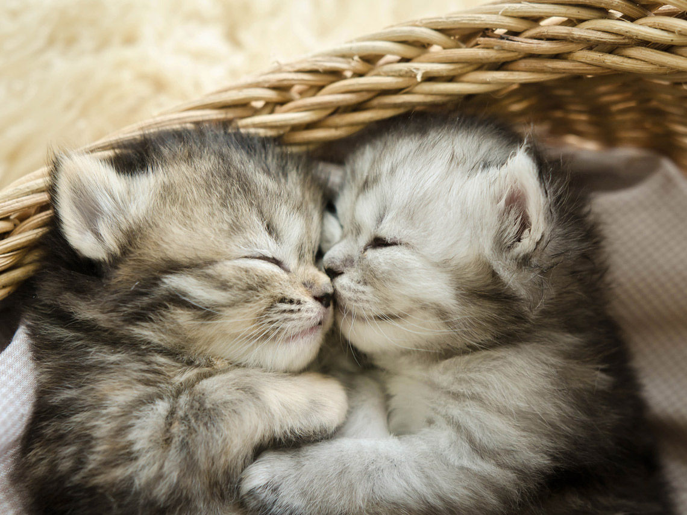

¿Por qué Los GatitosUwU son tan importantes para el ser humano?
Gatos, Gatitos, Michis,
Esta Pagina es dedicada a los Lindos Gatitos -Porque Son Muy Tiernos
-La historia del gato se basa sobre todo en la percepción que el hombre tiene del pequeño felino. Se cree que la domesticación del gato comenzó entre el 7500 a. C. y el 7000 a. C. La visión que el hombre tiene del gato ha diferido totalmente de una época a otra, desde el Antiguo Egipto cuando era venerado como un Dios, hasta la Edad media cuando los quemaban en las hogueras, pensando que era un animal diabólico.
Algunas razones por las cuales estos animales son tan agradables
-Nos enseñan la importancia de una toma de decisiones estratégica
"Si los animales pudieran hablar, el perro sería un tipo bocazas, pero el gato tendría la elegancia de no decir nunca una palabra de más". - Mark Twain A diferencia de sus enemigos-amigos caninos que se lanzan a la mínima oportunidad para salir corriendo por la puerta, para cazar la pelota por el pasillo o para devorar la bolsa de chuches derramadas por la cocina, los gatos tienden a elegir sus batallas con mucho más cuidado. Se toman más tiempo para observar, pensar y ponderar antes de decidir si la atracción de ese momento realmente merece su atención. También se mueven con más intención cuando escalan alturas aparentemente imposibles y encuentran la forma segura para bajarse de ahí después. Son reflexivos, estrategas y deliberados: justo los rasgos que sus dueños valoran y que les encantaría dominar.
